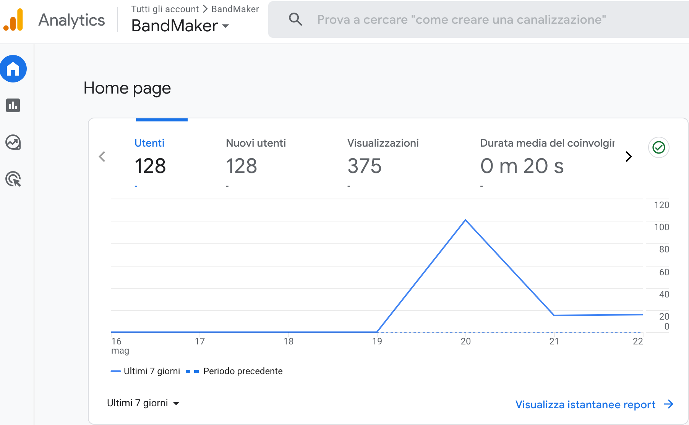
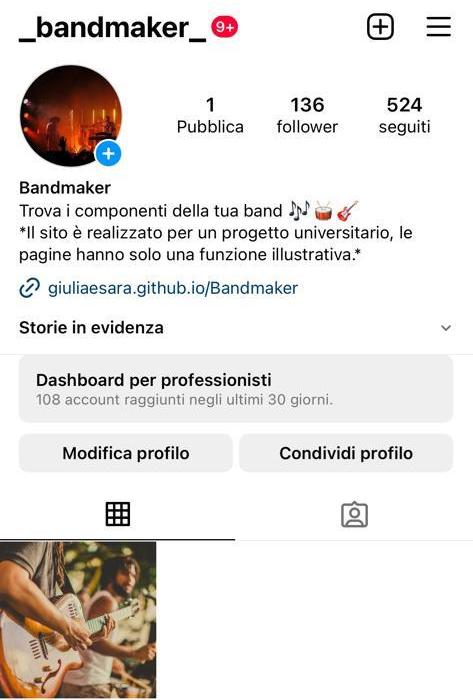
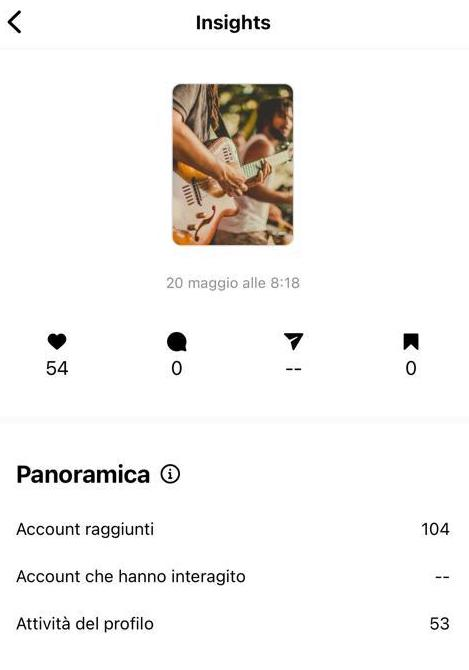
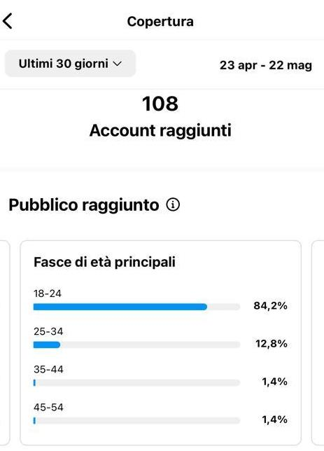

“Bandmaker” è un sito per musicisti che cercano artisti con cui poter creare una band e condividere la propria passione per la musica. Con questo progetto vogliamo facilitare questa ricerca, aiutando tutti coloro che vorrebbero far parte di questo mondo, mettendo a disposizione un database di potenziali componenti. Chiunque potrà iscriversi e mettersi a disposizione, fornendo le proprie abilità ed esperienze musicali, e allo stesso tempo cercare chi più si adatta alle proprie esigenze. Vogliamo incentivare la loro arte, poesia, creatività e trasformare un sogno in realtà.
Premettiamo che il nostro progetto è basato su una idea teorica, il funzionamento concreto del sito richiederebbe tecnologie e competenze fuori dalla nostra portata, quali la possibilità effettiva di registrarsi e, di conseguenza, la creazione di un database che memorizzi tutte le iscrizioni e le renda disponibili agli iscritti che vorrebbero effettuare una ricerca. Riteniamo, però, che il sito risulti efficace: la grafica è chiara e d’impatto, permettendo una buona usabilità e user experience. Tramite i pulsanti, abbiamo comunque tentato di mostrare quali azioni l’utente può svolgere. Le immagini e i font utilizzati sono stati scelti per permettere una lettura fluente e coerente con tutto il sito.
L’obiettivo principale del sito è quello di essere un aiuto per tutti gli artisti e musicisti che vogliono formare una band, ma non dispongono degli mezzi adatti per farlo. Per potere fare questo ci poniamo il fine di farci conoscere il più possibile. Nello specifico vogliamo ottenere:
Il sito si rivolge a musicisti e cantanti tra 18-40 anni che vogliono trovare componenti per formare una band. Generalmente gli eventi musicali sono un buon modo per conoscere musicisti emergenti. Anche il passaparola è uno strumento utile se non si hanno altri mezzi per trovare dei compagni. Essendo il nostro un target relativamente giovane, abbiamo ritenuto che Instagram fosse il social network più adatto per diffondere il nostro progetto.
Vogliamo promuovere il nostro progetto attraverso il passaparola e la pagina Instagram.
Per la valutazione dei risulati abbiamo utilizzato alcuni strumenti di misurazione dati. Per il conteggio delle visualizzazioni sul sito abbiamo usato Google Analytics, mentre per la pagina Instagram abbiamo sfruttato i dati messi a disposizione dalla piattaforma. Gli obiettivi che ci eravamo poste sono stati raggiunti, sia per quanto riguarda il numero di visualizzazioni che per le interazioni con il post e il profilo. È emerso, inoltre, che il target che abbiamo maggiormente raggiunto corrisponde alla fascia di età da noi prefissata.
   